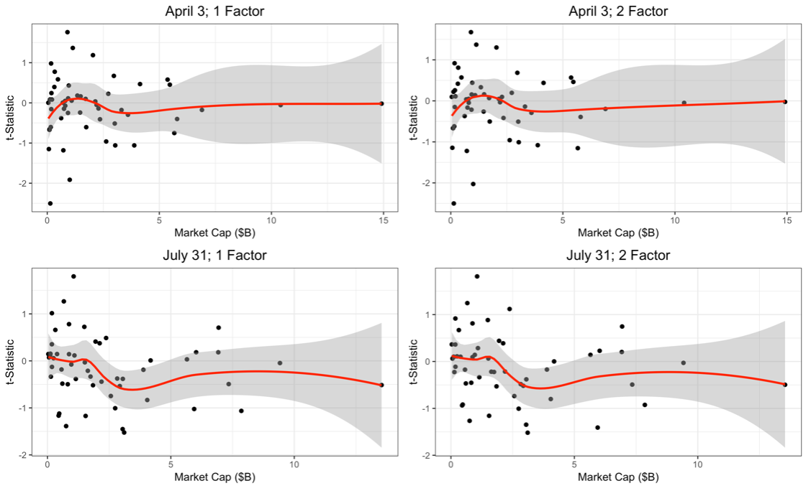

Dual-Class Index Exclusion
Links
Abstract
One of the most contentious and long-standing debates in corporate governance is whether company founders and other insiders should be permitted to use multi-class stock structures with unequal votes to control their companies while seeking capital through a public listing. Stymied by the permissive attitudes of legislatures and regulators, institutional investors opposed to multi-class arrangements recently turned to a new potential source of regulation: benchmark equity index providers. At the behest of institutional investors, the three largest index providers recently changed the eligibility requirements for their benchmark equity indexes to exclude, limit or underweight companies with multi-class stock structures. Investors expected the prospect of exclusion from such indexes to discourage founders and directors from adopting dual-class stock structures in connection with their initial public offerings.
While there is a voluminous financial literature on the effects of index inclusion and exclusion on stock prices, and legal scholars have recently explored the corporate governance implications of the exponential growth of passive index investing, focusing primarily on the incentives of index fund asset managers, neither the financial nor the legal literature have considered the corporate governance role and influence of the parties who write the rules for index investing: the index providers. We begin to fill this gap in the literature by assessing the efficacy of index providers as corporate governance arbiters through the rubric of their dual-class index exclusion decisions.
We start with the premise that the index exclusion sanction will not discourage dual-class listings unless it is sufficiently costly to outweigh the perceived benefits of founder control through a multi-class stock structure. We expect the index exclusion sanction will not be sufficiently costly for several reasons. First, it is difficult, if not impossible, to implement a sanction through the public capital markets. Second, the index inclusion effect on which the anticipated sanction is premised has effectively disappeared in recent years and may never have been a long-term source of lower capital costs. Third, despite the explosive growth of index investing in recent years, funds following stock indexes still hold a relatively modest percentage of the market capitalization of U.S. equities – around 12% according to BlackRock. Finally, the proliferation of index investing opportunities has weakened the market-moving influence of any one benchmark index.
To test the efficacy of the sanction, we conduct an event study of the S&P announcement that dual-class companies would henceforth be excluded from the S&P 1500 Composite Index and its components – the S&P 500, S&P 400 mid-cap and S&P 600 small-cap indices. Because S&P grandfathered dual-class companies currently in the index, we are able to compare movements in the stock prices of dual-class companies currently in the index with movements in the stock prices of dual-class companies not yet included in the index at the time of announcement. We do not observe any statistically significant abnormal returns in the stock prices of either included or excluded firms as a result of the S&P announcement, suggesting that exclusion is not expected to have a significant adverse cost of capital effect on firms that elect to list with a dual-class stock structures in the future and the sanction is ineffective. In the absence of an effective sanction, the exclusion of dual-class shares from benchmark equity indexes will not affect corporate governance choices. It may, however, have material adverse consequences for index investors and the index providers themselves.
Important figure

@article{winden2019dual,
title={Dual-Class Index Exclusion},
author={Winden, Andrew and Baker, Andrew},
journal={Va. L. \& Bus. Rev.},
volume={13},
pages={101},
year={2019},
publisher={HeinOnline}
}